Time Capsule 2: prototyping the capsule
Now it is time to put my selected objects into the time capsule and send it to the future! I am thinking how and what would make people from future be fascinated about at first. So my first step is going online to find some inspirations. I found people tend to use hard material and tricky structure to bring the mystery vibe to the time capsule. Some might also locks the capsule or makes it into puzzle to make the capsule more secure. With the ideas in mind, I start to brainstorm what might fit with my selected objects.
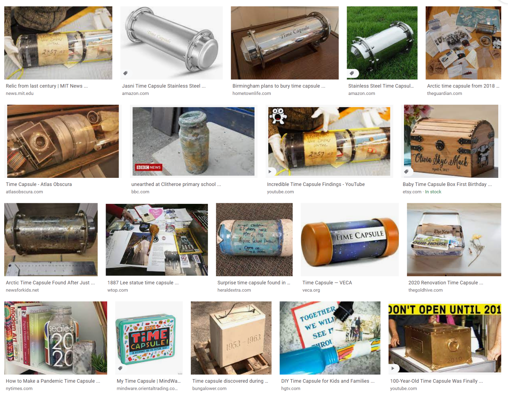I start by using the XMind app on iPad to let myself see the common cross points of the pencil cases, weekly planner, and the nail clipper. After a little bit of brainstorming and based on the theme I selected last week, I come across an idea of my time capsule. I want it to be non-electrical involved, yet has interested structure so that when people from the future first see the time capsule, they will feel fascinated that even without electricity and machining, things can be made in certain ways that are sophisticated. Thinking about this, I start to investigate some Asian ancient structure that made by wood or origami to get more inspirations.
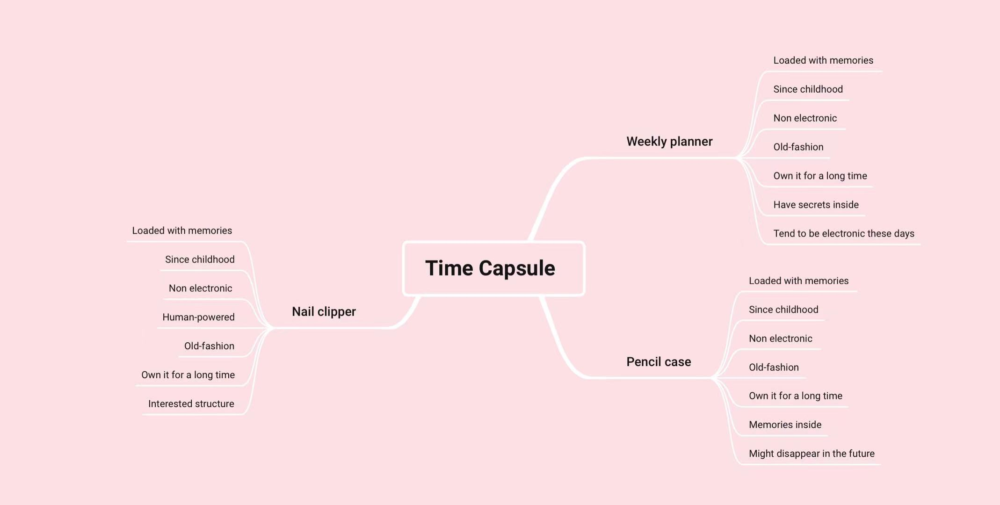 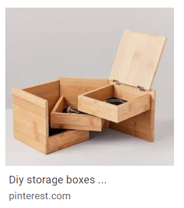 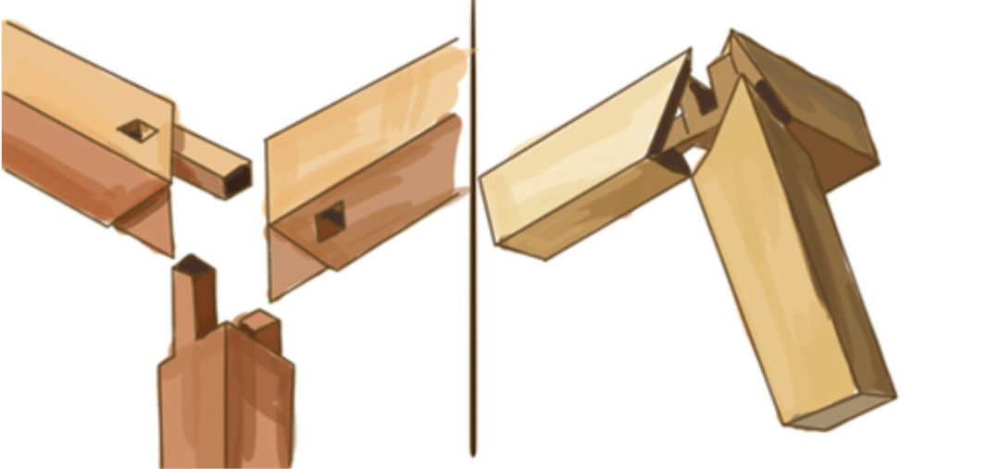
Then I decide to try out both just to see which is cooler. And I create the wooden one first. This is inspired by the Telescopic ball. I use the take-out chopstick I have at home and cut them in half, creating a shelf that can hold things it. It can be extended by twisting the sticks.
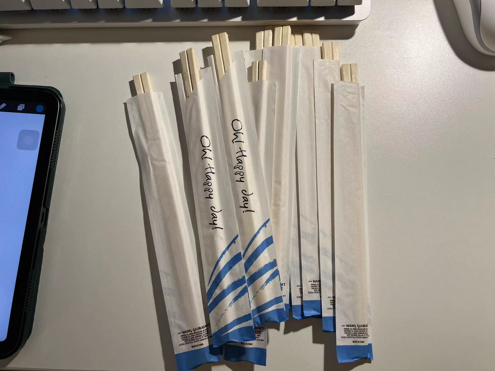 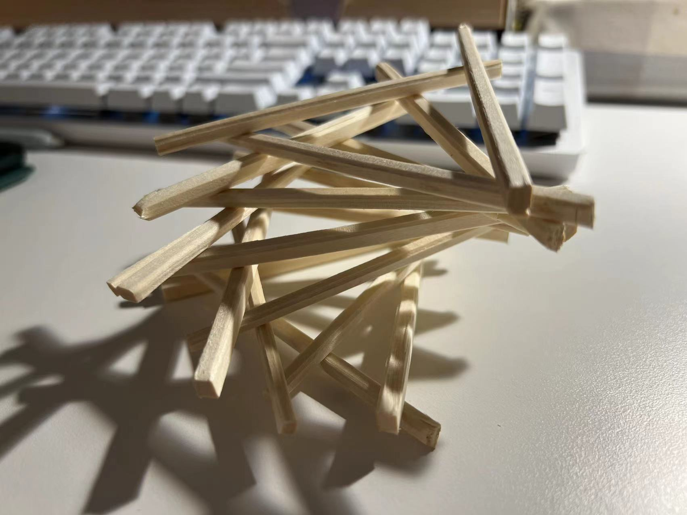 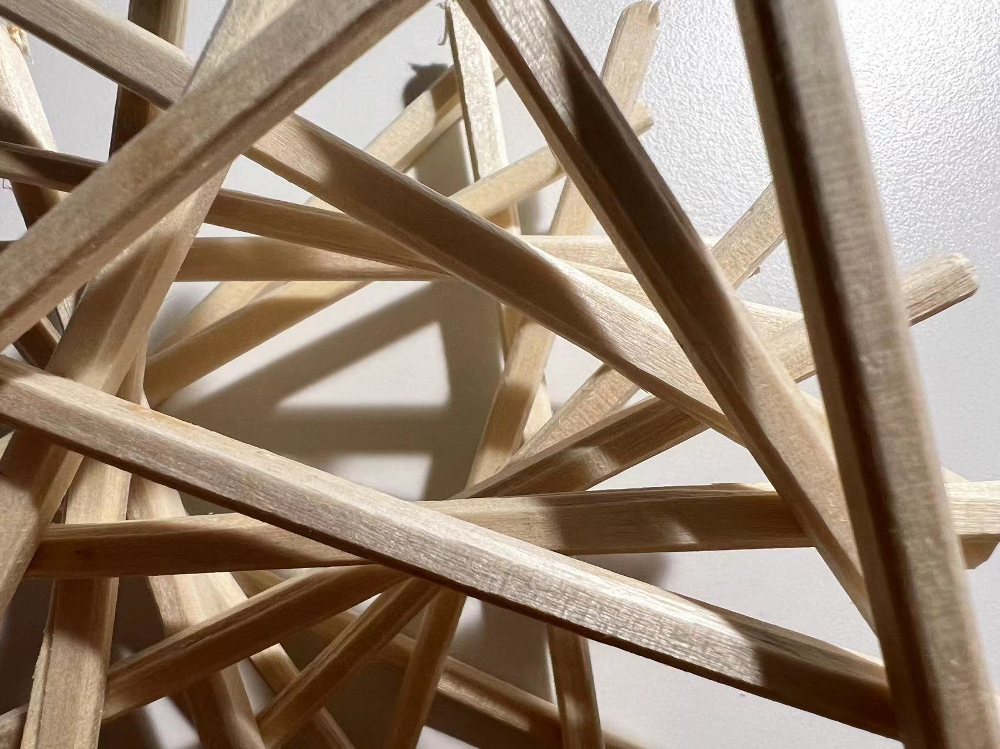---------------------------------------------
Time Capsule 1
When I first think about personal meaningful objects, it is very hard to decide which objects to choose. Then I decide that I am going to search something, if I lose it somehow, I will be really sad and pity. This is the logic of how I define my personal meaningful objects for this assignment. As this is part of the time capsule project, I also consider what will be fun to send out to the future. This becomes another part of concern when I am choosing the object.
Here are the three objects I choose: weekly planner, pencil case, and nail clips. Each of them has been with me for a long time, also has profound meaning or function to me that if I lose them, I will feel like losing part of my heart. They are also very old-fashioned style as thinking of 150 years later, when I imagine everything becomes very eletrical.
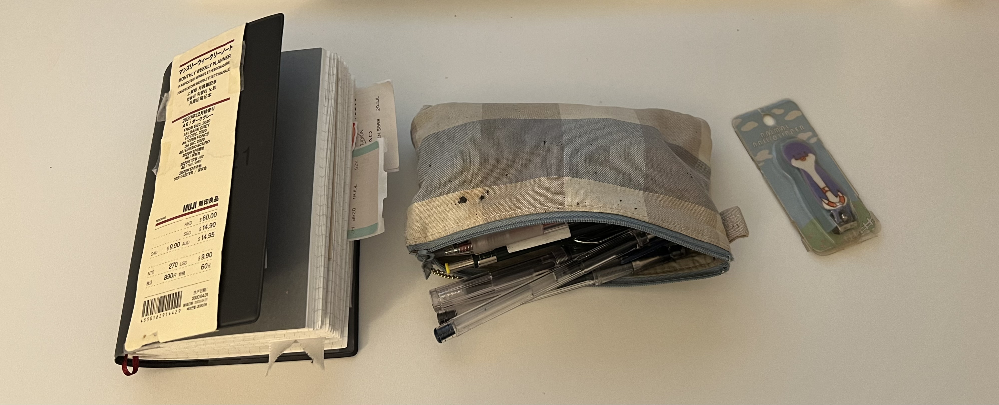Then I start to think what methods I should use to narrative the stories of them. I choose shooting video in a fun way to tell their stories. I have been watching many vlogs on the YouTube when youtuber recording their life. I realize that they all use some interesting transitions to make the video smoother and fun to watch. This is a skill I always want to learn and try to use it to document my life. So why not starting with this assignment? Below are some tutorials of how to make basic fun transitions for the videos that I read/watch:
https://www.youtube.com/watch?v=oyNXvXpbNQ4https://www.wevideo.com/blog/for-work/7-easy-camera-transitions-to-enhance-your-videos
I use my phone to video shoot and use iMovie and Clip app to edit the video. This is the first time I am using this two apps. There is a little bit learning curve, but once I try a couple times, they become very handy and fun.
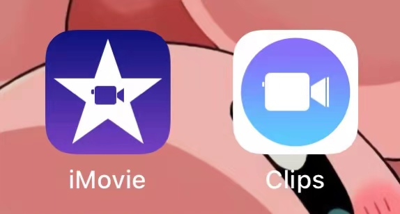After deciding the methods, I start to think the frame for my stories. I use the storytelling canvas to have my thoughts together as the screenplay to remind me what to record for the video.
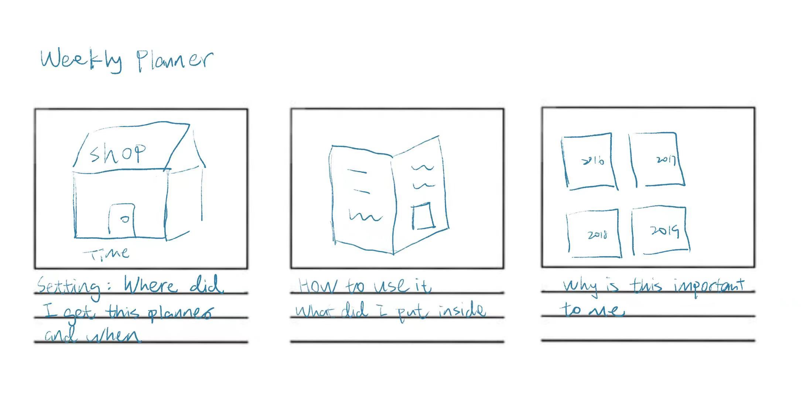 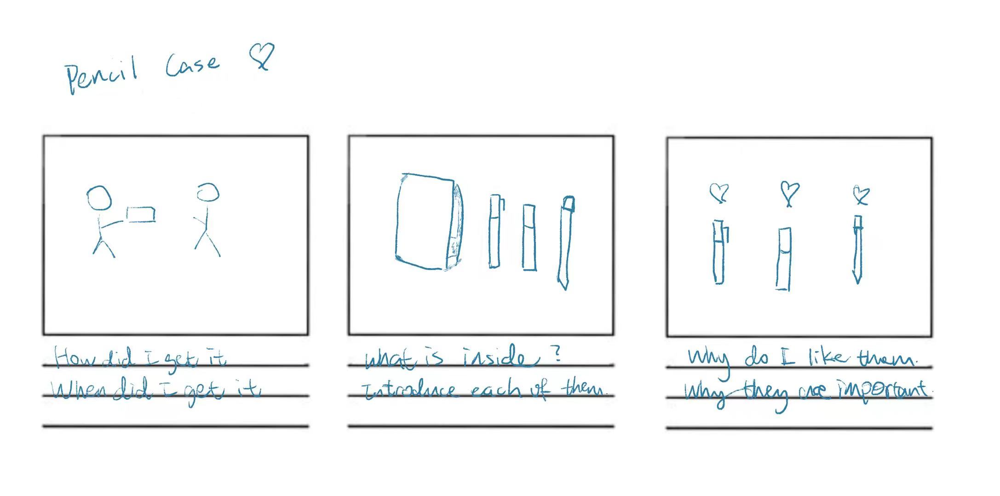 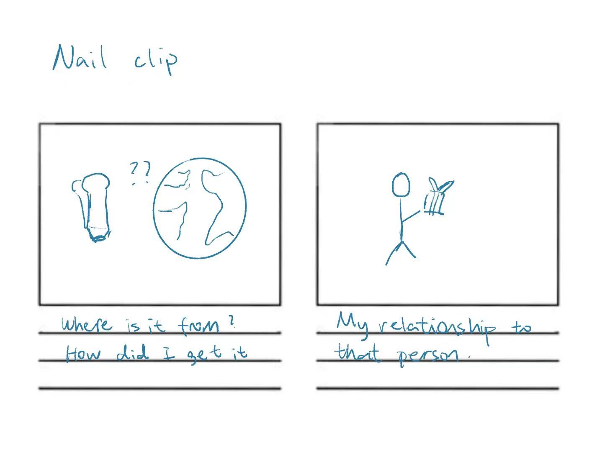For the weekly planner book, I decide to apply the slide-in and the clap techniques to make the video more interested. This is very important to me because this is the habit I have for almost five years. I like to write some New Year resolutions, what happened that makes me feel happy in a specific day, and my remainder. This little book is what puts me together in order. And it feels special when I finish a year and look back what happen in this year, the gratefulness will run into my heart.
For the pencil case, I use stop motion. I got it as a gift from my best friend since 5. We were apart in different schools after 6th grade. She gave me this when we were in 10th grade, and it lives with me since then. Every time I feel pressure or hinder, it is always here reminding me that I am not along. It also contains pens and toys I collected from all the country.
The nail clip is also a gift from a best friend. I got it during the 7th grade, and it is from Japan. This is the first foreign gift of mine and makes me realize that the quality of other countries’ industries. It is so cute that I even keep the package of it until now. Because it is in my make-up bag, it also travels the world with me too.
The shooting turns out very time consuming but definitely fun. Thank you for view this! Hope you like the ASMR and LoFi music inside!
---------------------------------------------
Assignment 5 New metaphor, Oct 18 2021
I want to challenge my imagination with this assignment, so I want to choose a complicate object to do a new metaphor. What comes into my mind is the word “Relationship”. In this case, I want to be specific about lover relationship.
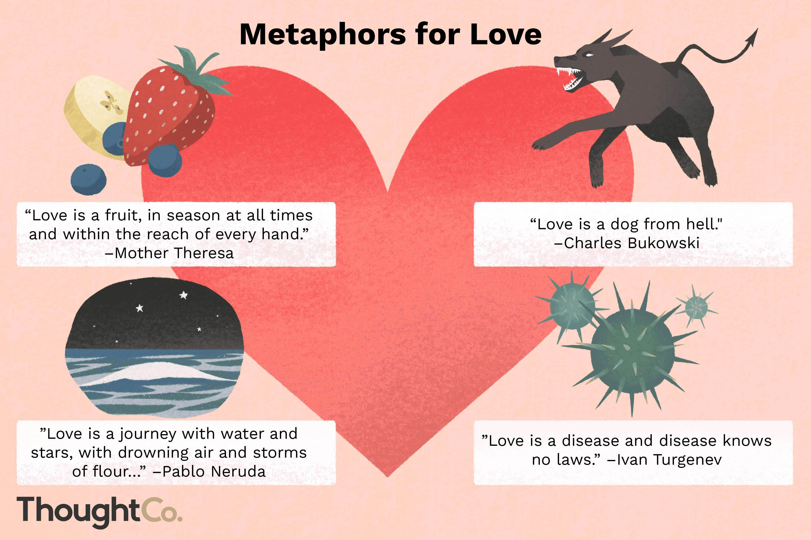
I have heard many different metaphors for relationship. Some says, “A marriage is a garden and you are the gardener”, some other says “Marriage is the grave of love”. Some compares relationship to a safety blanket, while others might think it is toxic sludge. See, relationship among two people can be varied in either good way and bad way. People tend to say relationship is hard for most of the time, because hard to leave someone you love yet hurt you. I want to keep all these characteristics in my new metaphor because I feel the previous metaphors are not comprehensive enough, yet I feel it will be really hard to find a precise one that can have many aspects, until I remember this childhood online game I had played. Let me introduce you to Gold Miner.
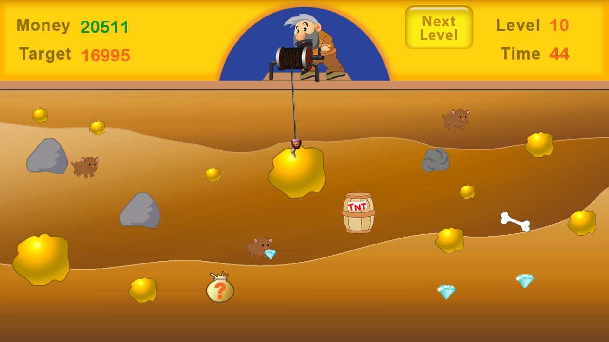 Click here for the game demoThis game is about a miner trying to get the most out of the underground: gold, diamond, and mysteries bags. But there is also heavy rock, pig that only worth 2 dollars, and TNT that might hurt your tools. Little gold, diamond, and pig are light so the miner can pull it up in a second, verses large gold, rock will take minutes to bring them up. The hook of the miner will swing from left to right, and the player gets to decide when to put down the hook when finishing aiming. Mysteries bags will probably give you either money, power lotion (that boost your strength so you can pull faster) or an explosive (use it when hooking up to a heavy rock). So how is this game related to relationship? I use Figma to create a sketch for this new metaphor. Here is my thoughts process:
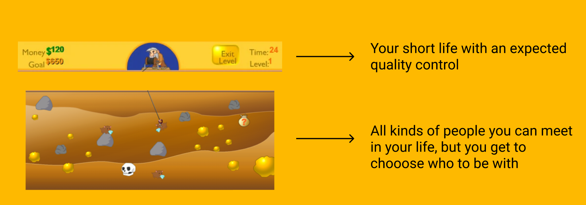Here are the metaphors for different kind of people you can choose for your relationship:
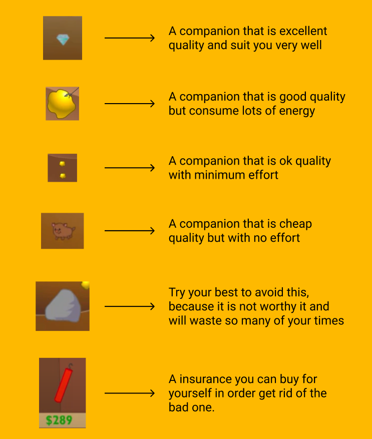I am hoping for this new metaphor can give people more confident to make the choice in their relationship, pretending you are playing a game. I have heard stories about people getting hurt but just cannot end a relationship. But if you are playing the gold miner, you will not want that rock in any chance or you will blow it up if you have an explosive on hands. Some other people are afraid of chasing of someone really good, but if you are playing the game you will try to get the diamond no matter how tricky the angle is.
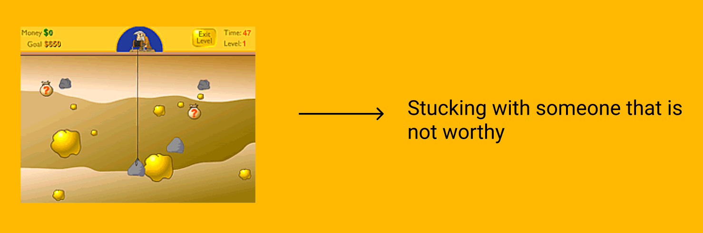With this new metaphor of relationship, I want to stop referring relationship as either positive or negative. Everyone is having different relationship; it is a little bit not responsible to define it for all. We all have different preferences, different expectations. Relationship should be something that is interactive, something you fight for the best, just like the gold miner game.
---------------------------------------------
Assignmemnt 4 50 Renderings, Oct 11 2021
To start this assignment, I am first thinking of which objects I should choose. I brainstorm a couple of examples such as books, fruits, then I realize these are too specific. In order to improve my skills of creative perception, interpretation and representation, I challenge myself to choose a “vaguer” object, so that I can interpret it to more metaphors. My thought process is in the below picture: Time? Love? Or even Magic? Within all these vague objects, I decide to do “Water”. Water can be any shape of the container. Water can be soft and gentle, but it can also be very powerful and making impact. Water is the transparent, but it is almost the main constituent of Earth’s hydrosphere and the fluids of all known living organism. It is very important for all of us yet remain mystery of itself. It will be fun to find all the metaphors and to render them.

Next step is sorting out the mediums I can use to render water. I divide them into the following categories: 2D graphic, 3D graphic, and the sound. Then I start rendering the water based on my image to it.

First 10 of the renderings I choose Procreate on iPad to completed. The 1st one is three water drips of vector image I drew. The 2nd one is an abstract version of water, and I am inspired by the Tokyo Olympics’ pictograms. The 3rd one is animate version of the water bottle. The 4th one is peaceful ocean created by the “Oceans” in the Procreate brush library. The 5th one is a Japanese animate version of the tap water. The 6th one is also the “Water” pen in the Procreate brush library. For the 7th one, since the word “watermelon” has water inside, it will be interesting if I fill in water with watermelon. The 8th and 9th are the sketch of waterdrop with different brushes (6B pencil and airbrush). 10th is the splash of water.


Next, I use a tissue box with a pretty color to cut out 5 different language of the word “Water”. They are truly different compare to each other, but the text to the native speaker is the strongest metaphor for water, as this represents the water in that specific culture.

Then, minimalistic approach comes into my head. Besides pure color block, I also use yard, colored paper, sand and plastic bottle to represent the water.

For the next group, I use photography to approach the realistic. To represent the flexibility of water, I choose different shapes of container.

The name for the below group photography is called the “Present of the water”. Water is easy to flow in some of the materials and change the properties of that materials such as paper towel or tissue, but materials like wax paper or aluminum sheet are hard to get wet.

I also collect a metaphor group for objects that are mostly, over 70% composted by water. They are Earth, jellyfish, coconut, human being, and cloud.

Last but not lease, I use sound as media to give people images of water. I gather 10 kinds of different sounds from both nature and artifact. Below are the audio:
Here are my 50 renderings of water. The process is fun yet hard in my opinion, but it definitely opens my imagination and push myself to develop more interested medium to express my thoughts. Thank you for viewing!
--------------------------------------------------------
Assignment 3 Translating Affordances, Oct 4 2021
Speaking of taking the inspiration to the interfaces of app, the first one that comes to my mind is those map apps. I am choosing the app Transit today because I think it has specific targets, strong affordances, and I cannot live without it in the New York City (I think anyone in NYC should have it).


I start to explore what I can do to bring this interface to a physical present. The app simply shows the location shape, where the user is, and the time information for each train. Unlike Google Map, the Transit map only serve for the NYC Metro information. I analyze the affordances below:


Then I start to build my prototype. I mainly used cardboard to differentiate the layers of the interface. R and B line are chosen to present in the prototype. I think it will be fancy if the location of the user actually lights up. So I bring out the electronic kits to build up a simple circuit, and use a blue LED as the indicator of my current location.


My final result and the video demonstration:

The video demonstrates how to interact with the prototype. Just like in the real app, the row of the train will shake a little bit when the train is approaching. If you tap on one specific line, then the “screen” will zoom in only showing that line.
The last assignment really opens my mind of how to create a prototype with the resource I have. I think the challenge part of this assignment is to analyze the affordances in the app and physically making them. I was hesitating at the beginning of what material I should use for showing the user location, because I think it is a very special and important affordance to alert the user. It ends up that LED is a good choice! I am excited to create more fun prototype in the future!
--------------------------------------------------------
Assignmemnt 2 Endanger Animal, Sept 27, 2021
Sulawesi Cardinal Shrimp
The native of this shrimp is in Indonesia. In 2018, the IUCN RED LIST marked them as Critically Endangered and possibly extinct in the wild. The current population trend is still decreasing. The shrimps live in the freshwater, which is inland waters. Caridina dennerli is available in the aquarium trade, most of them is wild caught even though the current levels of harvesting are not thought to have a considerable impact. They only have 1 year life length. Because of such short life, they become hard to multiply due to the following factors:
1. Lack of biological resources due to the fishing & harvesting aquatic resources
2. Dams and other water management break the natural system
3. Invasive and other problematic species, genes& diseases, the most critical one is Flowerhorn cichlids
4. Pollutions from industrial & military effluents, and agricultural effluents


Among these 4 factors, the pollution is one of the most threaten to this species, as there are nickel mining and hydro-electric power installations that bring siltation to the lake. The rapid expanding of human population around the lake cause the erosion and organic effluents too. This species was considered abundant in 2009, but then a significant decline was observed in 2011, till 2017, there was no specimens were found at two sites where they had been abundant before. However, sadly, no conservation plans are currently in place for them. We need more research to confirm if they are still extant. If so, the protection of their localities and habitats is needed, along with controlling the invasive species and harvest management. I decided to use aluminum can (because it can stand for the industrial pollution and human bump population at the same time) to make the prototype of the shrimp, here are some process pictures:


And here is my final result:


Thank you for viewing!
reference:https://www.iucnredlist.org/species/198055/109683594
--------------------------------------------------------